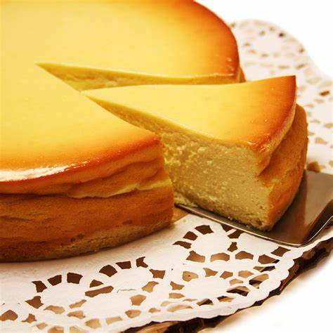

Tarta de queso
Ingredientes para una tarta de queso:
- -Galletas (para la base)
- -Mantequilla derretida
- -Azúcar
- -Queso crema
- -Crema agria o nata
- -Harina
- -Esencia de vainilla
Modo de preparación resumido:
- -Triturar galletas y mezclarlas con mantequilla para formar la base de la tarta.
- -Extender la mezcla en un molde para tarta y refrigerar.
- -Batir queso crema, azúcar, huevos, crema agria, harina y esencia de vainilla
- -Verter la mezcla sobre la base de galletas.
- -Hornear hasta que la tarta esté firme y ligeramente dorada.
- -Refrigerar antes de servir.
- ¡Ahora tienes una deliciosa tarta de queso! Ajusta la receta según tus preferencias y disfruta.